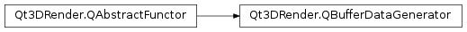

Qt3DRender.QBufferDataGenerator¶
Detailed Description¶
Provides a mechanism to generate buffer data from a job.
The
Qt3DRender.QBufferDataGeneratorshould be subclassed to provide a way to fill the data of aQt3DRender.QBuffer. Such functors are executed at runtime in a Qt 3D job (likely in parallel with many other jobs). When providing a functor you must implement theoperator()which will be called to generate the actual data. You must make sure that you have stored copies of anything you might need for it to execute properly. You should also implement the operator==. It will be used to compare with other functors and based on that allow the renderer to decide if a new functor should be executed or not.Note
functors are useful when you can build data from a few set of attributes (e.g: building a sphere from a radius property). If you already have access to the buffer data, using Qt3DRender::QBuffer::setData() is likely more efficient.
QByteArray createSphereMeshVertexData(float radius, int rings, int slices) { ... } class SphereVertexDataFunctor : public QBufferDataGenerator { public: SphereVertexDataFunctor(int rings, int slices, float radius) : m_rings(rings) , m_slices(slices) , m_radius(radius) {} QByteArray operator ()() override { return createSphereMeshVertexData(m_radius, m_rings, m_slices); } bool operator ==(const QBufferDataGenerator &other) const override { const SphereVertexDataFunctor *otherFunctor = functor_cast<SphereVertexDataFunctor>(&other); if (otherFunctor != nullptr) return (otherFunctor->m_rings == m_rings && otherFunctor->m_slices == m_slices && otherFunctor->m_radius == m_radius); return false; } QT3D_FUNCTOR(SphereVertexDataFunctor) private: int m_rings; int m_slices; float m_radius; };The
QT3D_FUNCTOR()macro should be added when subclassing. This allows you to usefunctor_cast()in your comparison operator to make sure that the other functor is of the same type as the one your are trying to compare against.
-
class
PySide2.Qt3DRender.Qt3DRender.QBufferDataGenerator¶
-
PySide2.Qt3DRender.Qt3DRender.QBufferDataGenerator.__eq__(other)¶ Parameters: other – PySide2.Qt3DRender.Qt3DRender::QBufferDataGeneratorReturn type: PySide2.QtCore.boolShould be reimplemented to return true when two generators (the one you are comparing against and the
othergenerator) are identical, false otherwise.Note
The renderer uses this comparison to decide whether data for a buffer needs to be reuploaded or not when the functor on a
Qt3DRender.QBufferchanges.
© 2018 The Qt Company Ltd. Documentation contributions included herein are the copyrights of their respective owners. The documentation provided herein is licensed under the terms of the GNU Free Documentation License version 1.3 as published by the Free Software Foundation. Qt and respective logos are trademarks of The Qt Company Ltd. in Finland and/or other countries worldwide. All other trademarks are property of their respective owners.